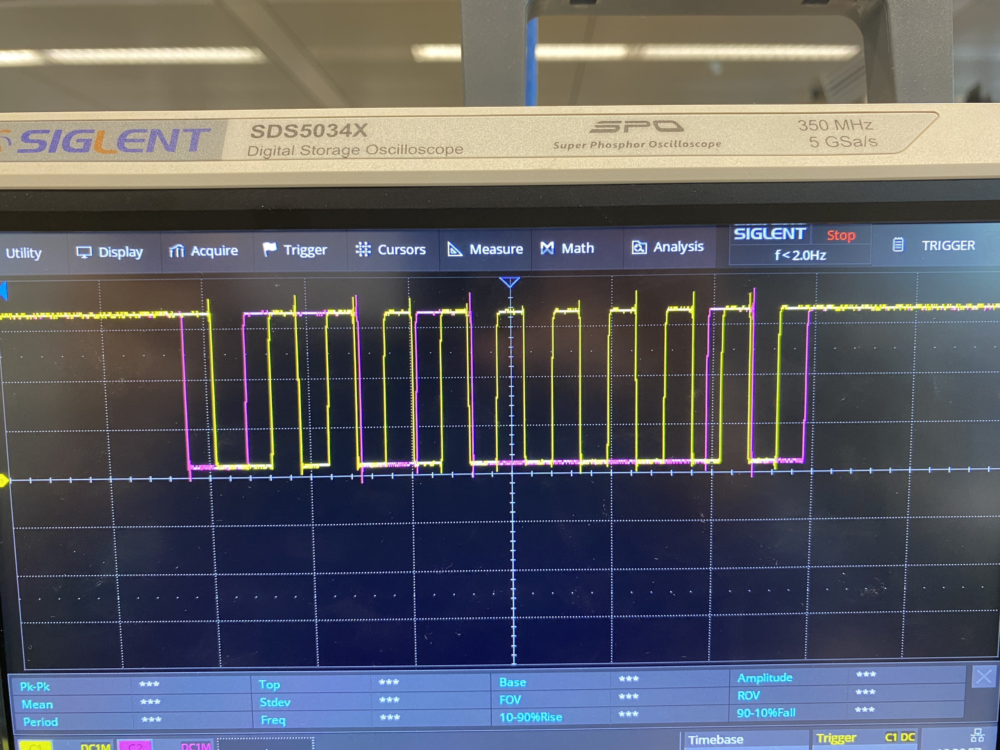
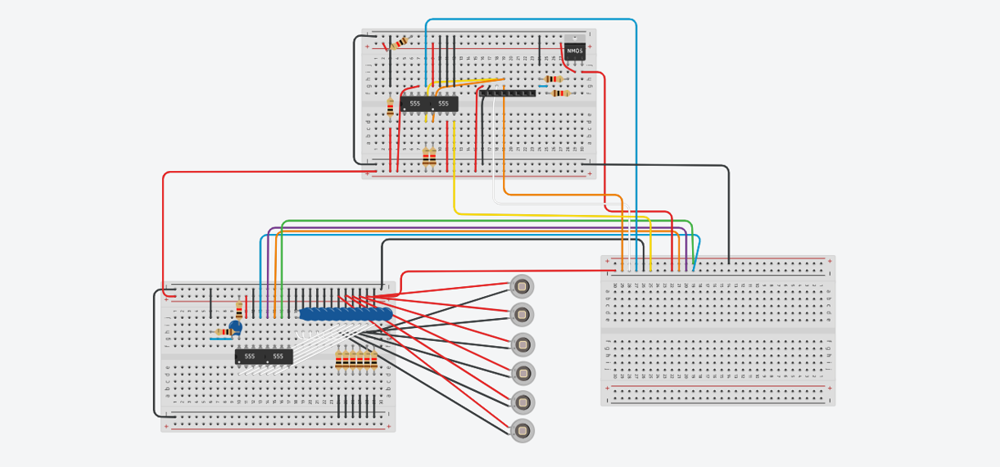
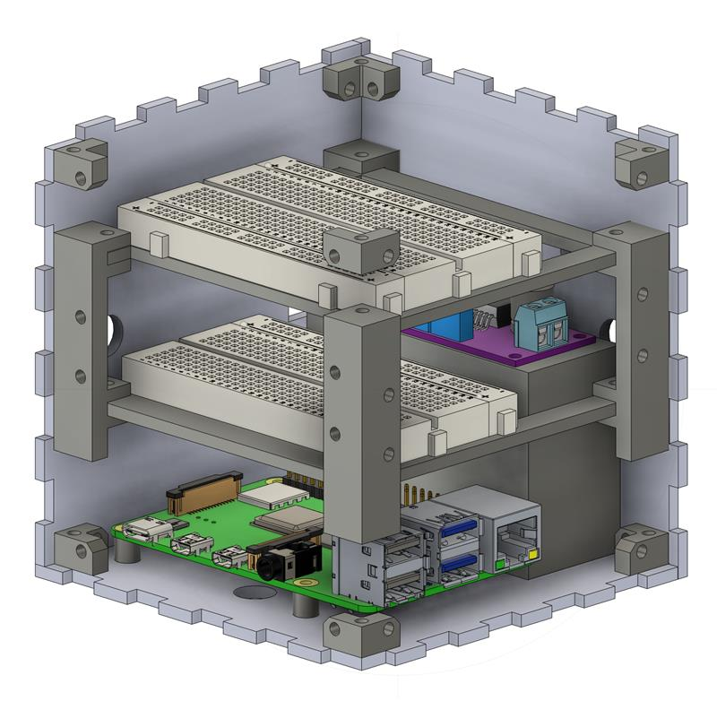
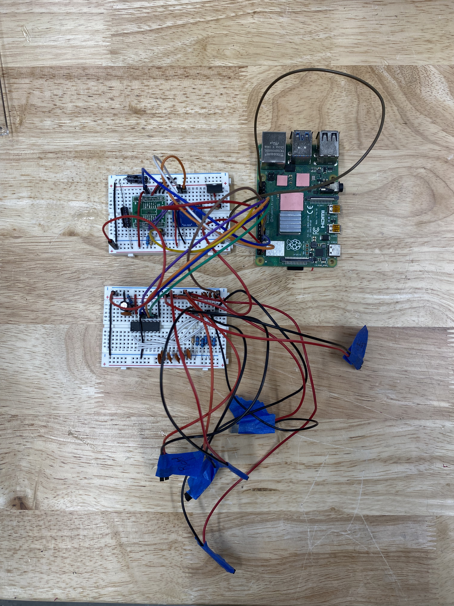

CUSLI CubeSat
The InkSat, CUSLI's current project, aims to explore the effectiveness of e-paper as a thermal controller for small satellites in space. E-paper is an electronic display. Commonly found in E-readers, it consists of a film filled with charged ink particles in a clear fluid. When a charge is applied, the ink particles repel or attract from the surface of the film accordingly. Once the state of the particles has changed and a pattern is shown on the screen, the e-paper it draws nearly zero current.
My role in this project lies in the integration of an IMU sensor into the Attitude Determination System, where we work on determining the satellites' orientation in space, as well as constructing a V2 prototype of the satellite to enable rotational testing.
The electronics are controlled using a Raspberry Pi 4B, communication using I2C, and the prototype was laser-cut from acrylic.
I2C Communication Testing
The IMU implementation began with testing the IMU for responsiveness. Here you can see the I2C bus visible on the oscilloscope.
A response would mean that the last pink bit is pulled low by the IMU, which is known as an acknowledgment (ACK). As seen in this image, this is not the case, indicating an error.
(Yellow = clk, pink = data)


Electronics Layout
Before constructing the structure of the V2 CubeSat, the electronic circuitry had to be redesigned to fit the true-to-size space constraints of a 10 x 10 x 10 cm CubeSat (1U).
Mechanical Design
The V2 design of the CubeSat began with the idea of autonomous rotational testing. This meant including an on-board battery to supply the system with power, allowing for wireless testing.


Hardware Integration
A picture of the redesigned circuit.
Rotation Demo
Here you can see me testing the stepper motor and shaft coupling before fully assembling the V2 CubeSat. See the top image for the full assembly.